Richiedi modifiche alla documentazione
Richiedi modifiche alla documentazione Modifica questa pagina
Modifica questa pagina Scopri come collaborare
Scopri come collaborareDashboard di Digital Advisor e reporting per Keystone
Collaboratori
Il dashboard di Consulente digitale Active IQ consente di monitorare l’utilizzo delle sottoscrizioni NetApp Keystone e di generare report. Se ti iscrivi ai servizi Keystone, puoi visualizzare i dettagli dell’abbonamento e dell’utilizzo nel widget Abbonamenti Keystone della dashboard di Digital Advisor.

|
Le informazioni qui disponibili si applicano sia a ONTAP che a StorageGRID. Le eccezioni sono state evidenziate nelle sezioni pertinenti. |
Per informazioni sul widget di Keystone Digital Advisor, vedere "Visualizza l’utilizzo della capacità con l’abbonamento NetApp Keystone".
Per visualizzare i dettagli, attenersi alla seguente procedura:
-
Accedere a Digital Advisor. Puoi vedere il widget Keystone Subscriptions che riepiloga l’utilizzo della capacità rispetto ai servizi Keystone acquistati.
-
Nel widget Abbonamenti Keystone, fare clic su Visualizza ulteriori dettagli per visualizzare i dettagli di utilizzo e gli avvisi sui volumi nella pagina Abbonamenti Keystone. In alternativa, dal riquadro di navigazione a sinistra, andare a GENERAL > Keystone Subscriptions (GENERALE > Abbonamenti Keystone).
I dettagli degli abbonamenti, i grafici di utilizzo per ciascun livello di servizio e i dettagli del volume sono visualizzati nelle diverse schede della schermata Abbonamenti Keystone.
|
|
Il consumo di capacità nelle sottoscrizioni Keystone viene visualizzato in Tibers su dashboard e report, fino a due cifre decimali. Se l’utilizzo è inferiore a 0.01 TIB, il valore viene visualizzato come 0 oppure No Usage. Per altre metriche di utilizzo, vedere "Metriche e definizioni dei livelli di servizio". Per informazioni sulle diverse capacità utilizzate in Keystone, vedere "Definizioni della capacità del servizio Keystone".
|
Visualizza i dettagli dell’abbonamento
Puoi visualizzare tutti gli abbonamenti per un nome account nella scheda Dettagli abbonamento.
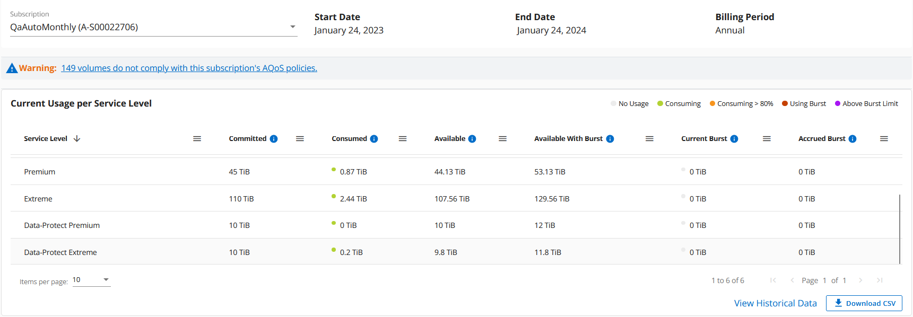
Per ciascun numero di abbonamento, vengono visualizzate le seguenti informazioni:
-
Subscription Number: Il numero di abbonamento Keystone assegnato da NetApp.
-
Tracking ID: L’ID di tracciamento assegnato al momento dell’attivazione dell’abbonamento. Si tratta di un ID univoco per ciascun abbonamento e sito, utilizzato per tenere traccia dell’abbonamento.
-
Billing Period (periodo di fatturazione): Il periodo di fatturazione dell’abbonamento, ad esempio mensile, trimestrale o annuale.
-
Data di inizio: La data di inizio dell’abbonamento.
-
Data di fine: Data di fine dell’abbonamento. Una data vuota indica che l’abbonamento non ha una data di fine e viene rinnovato automaticamente. In base a questa data, potrebbero essere visualizzati messaggi informativi per le sottoscrizioni in scadenza o con criteri di rinnovo automatico allegati.
-
Usage Status (Stato utilizzo): Indica la quantità di abbonamento utilizzata o utilizzata in eccesso. È possibile ordinare l’elenco in base a questa colonna se si desidera visualizzare i record di consumo più elevato.
-
: Facendo clic su questa icona, viene visualizzata la scheda Subscription Time Series (Serie temporale abbonamento) in cui sono visualizzati i dati storici di utilizzo per ciascun livello di servizio incluso in questo abbonamento.
Per ulteriori informazioni, fare clic sulla freccia verso il basso per il record di un abbonamento. I dettagli, come il nome del livello di servizio, le capacità assegnate, consumate, disponibili e l’utilizzo corrente e accumulato burst, sono visualizzati in TIB.
|
|
Vengono evidenziati livelli di servizio specifici che registrano un consumo più elevato. È inoltre possibile visualizzare avvisi e avvisi generati per i volumi. |
Per informazioni sui servizi di storage Keystone e sui relativi livelli di servizio, vedere "Livelli di servizio".
Per verificare lo stato di utilizzo di ciascun abbonamento, fare riferimento ai seguenti indicatori di utilizzo:
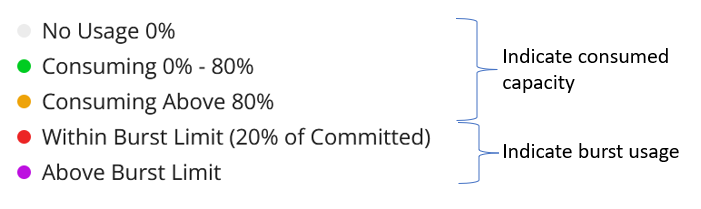
: Nessun utilizzo della capacità registrato rispetto alla capacità impegnata del livello di servizio
: Il consumo è normale, entro il 80% della capacità impegnata
: Consumo massimo, ovvero l’utilizzo sta per raggiungere il 100% o più della capacità impegnata. La colonna consumato visualizza questo indicatore per qualsiasi consumo superiore al 80% della capacità impegnata
: Il consumo rientra nel limite di burst. Il consumo burst è il consumo che supera il 100% della capacità impegnata di un livello di servizio e rientra nel limite di utilizzo burst concordato, ad esempio il 120%
Indica un consumo superiore al limite di burst stabilito
Visualizzare i dati storici dell’abbonamento
La scheda Subscription Time Series (Serie temporale abbonamento) visualizza i dati storici delle sottoscrizioni Keystone per un periodo specifico. I grafici verticali visualizzano i dettagli di utilizzo per l’intervallo di tempo selezionato con gli indicatori appropriati per il confronto e la generazione di report.
-
Fare clic sulla scheda Subscription Time Series.
-
Selezionare l’abbonamento richiesto per il quale si desidera visualizzare i dettagli. Per impostazione predefinita, viene selezionato il primo abbonamento nel nome dell’account.
-
Selezionare l’intervallo di tempo dalle icone del calendario nei campi Data e Data. L’intervallo di tempo predefinito va dalla data di inizio del periodo di fatturazione alla data corrente.
Per ottenere performance ottimali e un’esperienza utente ottimale, limitare l’intervallo di date della query a un massimo di tre mesi. -
Fare clic su View Details (Visualizza dettagli). I dati di consumo cronologici dell’abbonamento per ciascun livello di servizio vengono visualizzati in base all’intervallo di tempo selezionato. Puoi spostare il cursore del mouse sui grafici per visualizzare la suddivisione dell’utilizzo in termini di dati impegnati, consumati, burst e superiori al limite burst in quel punto di raccolta dati.
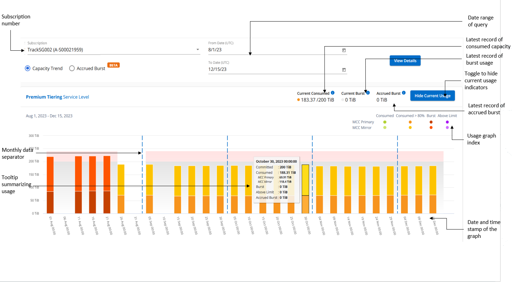
Vengono visualizzati i seguenti dettagli:
-
Dettagli dell’abbonamento: La data di inizio e di fine dell’abbonamento e il periodo di fatturazione, ad esempio trimestrale, annuale e così via.
-
Diagrammi di utilizzo: I grafici a barre visualizzano il nome del livello di servizio e la capacità consumata rispetto a tale livello di servizio per l’intervallo di date. La data e l’ora della raccolta vengono visualizzate nella parte inferiore del grafico.
In base all’intervallo di date della query, i grafici di utilizzo vengono visualizzati in un intervallo di 30 punti di raccolta dati. I seguenti colori nei grafici a barre indicano la capacità consumata definita all’interno del livello di servizio:
-
Verde: Entro il 80%.
-
Ambra: 80% - 100%.
-
Rosso: Utilizzo burst (100% della capacità impegnata fino al limite burst concordato)
-
Viola: Al di sopra del limite di burst o.
Above Limit.
Un grafico vuoto indica che non sono disponibili dati nell’ambiente in quel punto di raccolta dati.
-
-
Corrente assorbita: Indicatore della capacità consumata (in TIB) definita per il livello di servizio. Questo campo utilizza colori specifici per l’utilizzo:
-
Grigio: Nessuno.
-
Verde: Entro il 80% della capacità impegnata.
-
Ambra: Qualsiasi consumo superiore al 80% della capacità impegnata.
-
-
Current Burst: Indicatore della capacità consumata entro o al di sopra del limite di burst definito. Qualsiasi utilizzo entro il limite di burst concordato, ad esempio il 20% al di sopra della capacità impegnata, rientra nel limite di burst. L’utilizzo ulteriore viene considerato come utilizzo superiore al limite di burst. Questo campo utilizza colori specifici per l’utilizzo:
-
Grigio: Nessuno.
-
Rosso: Burst.
-
Viola: Al di sopra del limite di burst.
-
-
Burst maturato: Indicatore dell’utilizzo burst accumulato o della capacità consumata calcolata al mese per il periodo di fatturazione corrente. L’utilizzo del burst accumulato viene calcolato in base alla capacità impegnata e consumata per un livello di servizio:
(consumed - committed)/365.25/12.
Gli indicatori consumo corrente, burst corrente e burst accumulato determinano il consumo rispetto al periodo di fatturazione dell’abbonamento e non si basano sull’intervallo di date della query.
Dettagli su <strong> per Data ProtecTector </strong>
Se si è abbonati al servizio protezione dati (DP), è possibile visualizzare la disgregazione dei dati di consumo in base ai siti primari e mirror MetroCluster nella scheda Serie temporale abbonamento.
Per informazioni sulla protezione dei dati, vedere "Protezione dei dati".
Se i cluster nell’ambiente di storage ONTAP sono configurati in una configurazione MetroCluster, i dati di consumo dell’abbonamento Keystone vengono suddivisi nello stesso grafico della serie temporale per visualizzare il consumo sui siti primario e mirror per i livelli di servizio di base.
|
|
I grafici a barre dei consumi sono suddivisi solo per i livelli di servizio di base. Per i livelli di servizio DP, questa delimitazione non viene visualizzata. |
Per i livelli di servizio DP, il consumo totale viene suddiviso e l’utilizzo in ciascun sito viene riflesso e fatturato in un abbonamento separato, vale a dire un abbonamento per il sito primario e un altro per il sito mirror. Per questo motivo, quando si seleziona il numero di abbonamento per il sito primario nella scheda Subscription Time Series, i grafici dei consumi per i livelli di servizio DP visualizzano i dettagli relativi al consumo discreto solo per il sito primario. Poiché ogni sito in una configurazione MetroCluster agisce come origine e mirror, il consumo totale di ogni sito include i volumi di origine e mirror creati in quel sito.
Per i livelli di servizio di base, tuttavia, ciascun volume viene addebitato come provisioning nei siti primario e mirror, quindi lo stesso grafico a barre viene suddiviso in base al consumo nei siti primario e mirror.
La seguente immagine mostra i grafici relativi al livello di servizio Extreme e al numero di abbonamento principale. Il grafico della stessa serie temporale indica il consumo del sito mirror in una tonalità più chiara del codice colore utilizzato per il sito primario. Il suggerimento del mouse mostra la disgregazione dei consumi (in TIB) per i siti primario e mirror, rispettivamente 1.02 TIB e 1.05 TIB.
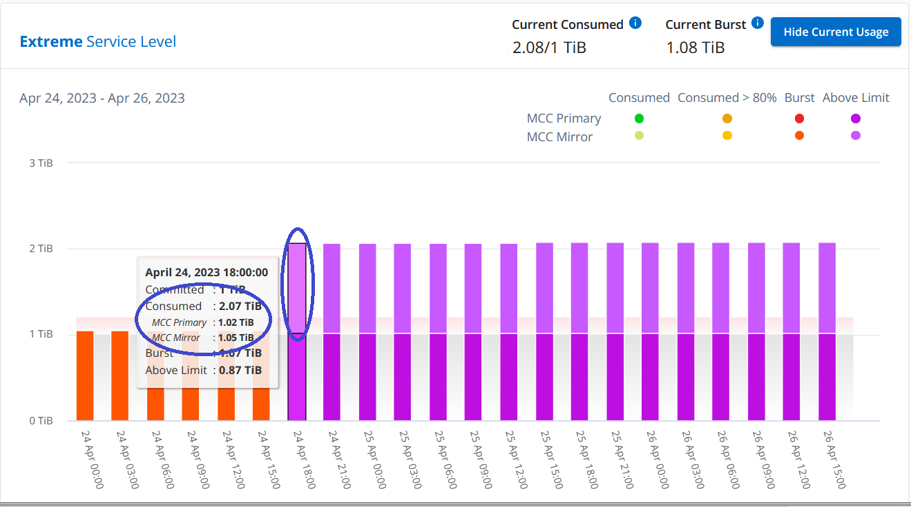
Per il livello di servizio Data-Protect Extreme, i grafici appaiono come segue:
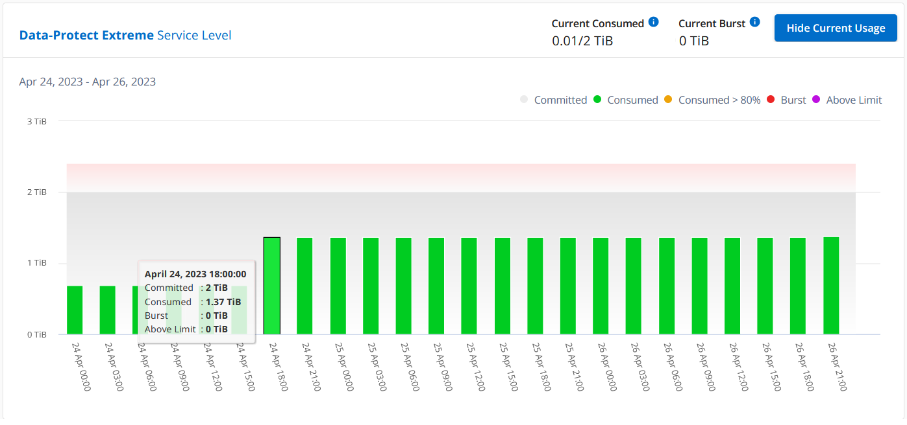
Quando si controlla l’abbonamento secondario, è possibile vedere che il grafico a barre per il livello di servizio Extreme nello stesso punto di raccolta dati viene invertito e la disgregazione dei consumi nei siti primario e mirror è rispettivamente di 1.05 TIB e 1.02 TIB.
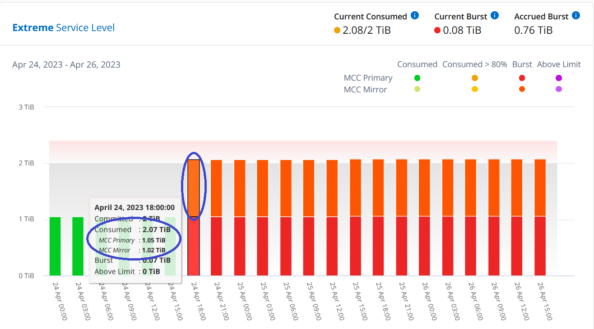
Per il livello di servizio Data-Protect Extreme, il grafico viene visualizzato nello stesso punto di raccolta:
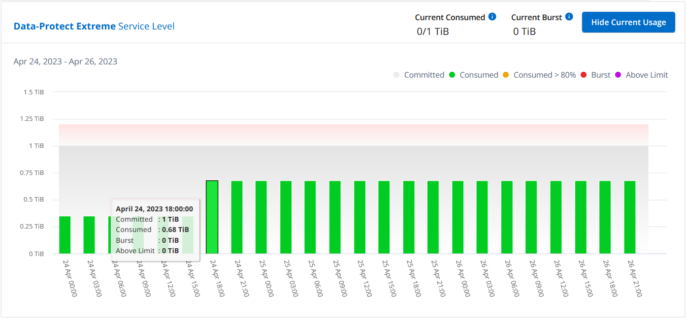
Per informazioni su come MetroCluster protegge i dati, consulta "Comprensione della protezione dei dati e del disaster recovery di MetroCluster".
Visualizza i dettagli del sistema
Nella scheda Dettagli sistema, è possibile visualizzare il consumo e altri dettagli dei volumi in ONTAP. Per StorageGRID, questa scheda visualizza i nodi e il loro utilizzo individuale nell’ambiente di storage a oggetti.
Dettagli volume <strong> ONTAP </strong>
Per ONTAP, la scheda Dettagli sistema visualizza informazioni, come l’utilizzo della capacità, il tipo di volume, il cluster, l’aggregato e il livello di servizio dei volumi nell’ambiente di storage gestito dall’abbonamento Keystone.
-
Fare clic sulla scheda Dettagli sistema.
-
Selezionare il numero dell’abbonamento. Per impostazione predefinita, viene selezionato il primo numero di abbonamento disponibile.
Vengono visualizzati i dettagli del volume. È possibile scorrere le colonne e ottenere ulteriori informazioni facendo clic con il mouse sulle icone delle informazioni accanto alle intestazioni delle colonne. È possibile ordinare in base alle colonne e filtrare gli elenchi per visualizzare informazioni specifiche.
Per i servizi di protezione dei dati, viene visualizzata una colonna aggiuntiva per indicare se il volume è un volume primario o mirror nella configurazione di MetroCluster. È possibile copiare i numeri di serie dei singoli nodi facendo clic sul pulsante Copy Node Serials (Copia serie nodi).
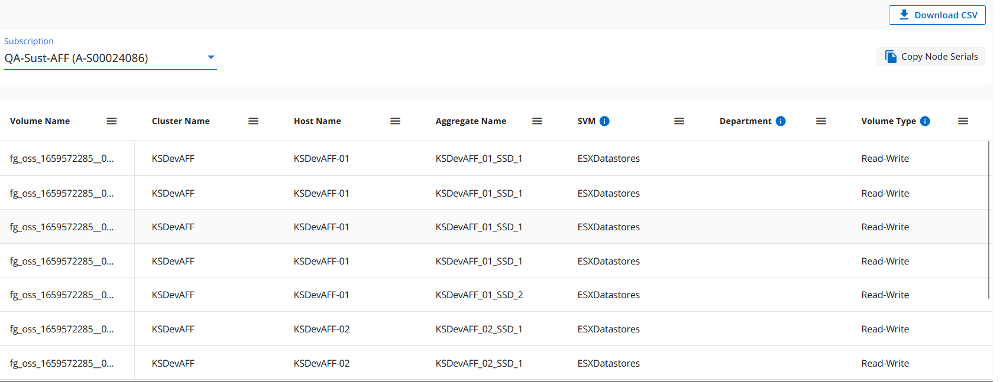
Nodi <strong> Fundes GRID e dettagli sul consumo </strong>
Per StorageGRID, questa scheda visualizza l’utilizzo logico dei nodi nell’ambiente di storage a oggetti.
-
Fare clic sulla scheda Dettagli sistema.
-
Selezionare il numero dell’abbonamento. Per impostazione predefinita, viene selezionato il primo numero di abbonamento disponibile. Selezionando il numero di abbonamento, viene attivato il collegamento per i dettagli dello storage a oggetti.
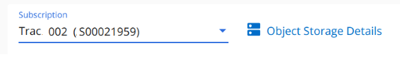
-
Fare clic sul collegamento per visualizzare i nomi dei nodi e i dettagli sull’utilizzo logico per ciascun nodo.
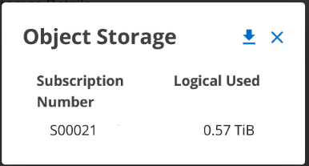
Generare report
È possibile generare e visualizzare i report relativi ai dettagli dell’abbonamento, ai dati storici di utilizzo di un intervallo di tempo e ai dettagli di sistema da ciascuna scheda facendo clic sul pulsante Download CSV:
I dettagli vengono generati in formato CSV che è possibile salvare per un utilizzo futuro.
Nella scheda Subscription Time Series, è possibile scaricare il report per i 30 punti di raccolta dati predefiniti dell’intervallo di date della query o dei report giornalieri.
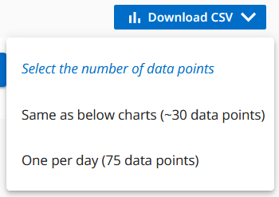
Un report di esempio per la scheda Subscription Time Series, in cui vengono convertiti i dati grafici:
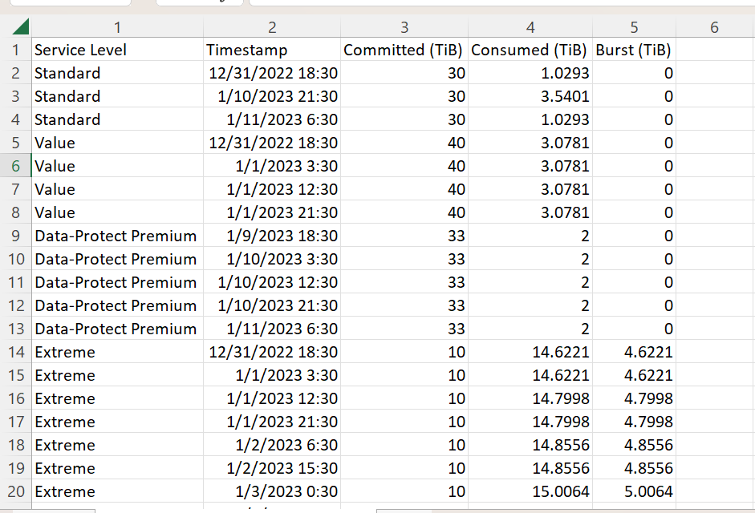
Visualizza avvisi
Gli avvisi sul dashboard inviano messaggi di attenzione che consentono di comprendere i problemi che si verificano nell’ambiente di storage.
Gli avvisi possono essere di due tipi:
-
Informazioni: In caso di problemi, come ad esempio le sottoscrizioni, è possibile visualizzare avvisi informativi. Passare il cursore sull’icona delle informazioni per ulteriori informazioni sul problema.
-
Attenzione: I problemi, come la non conformità, vengono visualizzati come avvisi. Ad esempio, se all’interno dei cluster gestiti sono presenti volumi che non dispongono di criteri QoS adattivi (AQoS), viene visualizzato un messaggio di avviso. È possibile fare clic sul collegamento nel messaggio di avviso per visualizzare l’elenco dei volumi non conformi nella scheda Dettagli sistema.
Per informazioni sui criteri AQoS, vedere "Policy di fatturazione e QoS adattivi".
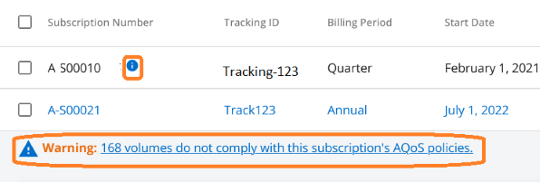
Contattare il supporto NetApp per ulteriori informazioni su questi messaggi di avvertenza. Per ulteriori informazioni, vedere "Inoltrare una richiesta di servizio".